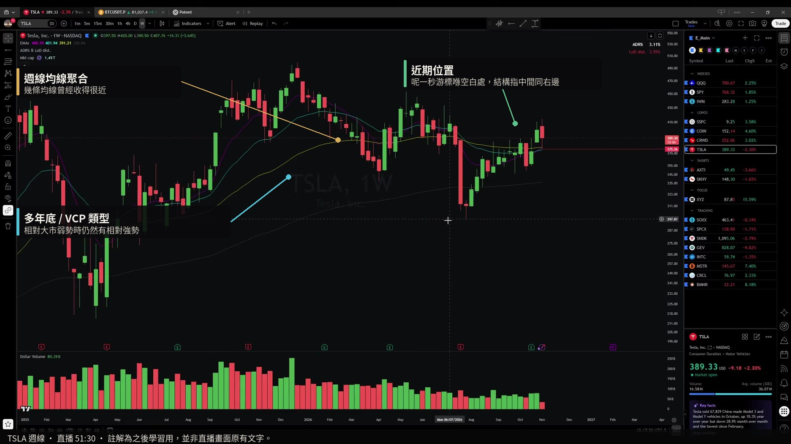
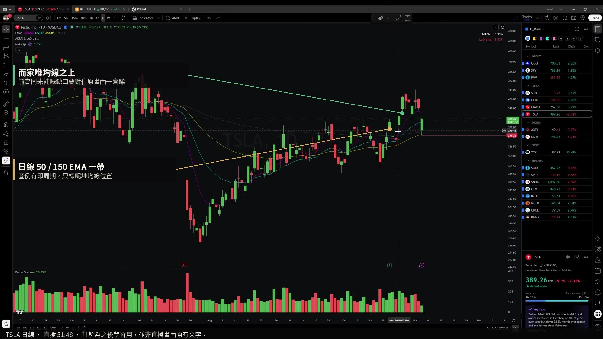

概要
星期一講過嘅計劃，佢覺得做得好
51:10 開始講 Tesla：星期一已經提過，計劃完整執行。佢覺得呢段係近期其中一筆最好嘅交易。理由包括：週線均線聚合、多年底／VCP 類型、大市弱勢時仍然有相對強勢；以及日線 50、150 EMA、前高、未補嘅缺口。之後話自己本應 size 再大啲，但畫面冇倉位數字，本頁亦不發明。
圖一 · 主圖
TSLA 週線：均線聚合同多年底
直播 51:30

原話
Tesla is the one I mentioned on Monday. We got the plan fully worked out. I think this is one of the best trades I've ever made in a while. We mentioned this weekly EMA convergence, multi-year base, VCP type base, and relative strength during the market weakness,
Tesla 就係我星期一提過嗰隻。我哋把計劃完整執行咗。我覺得呢段係近期我做過最好嘅交易之一。我哋提過呢個週線均線聚合、多年底、VCP 類型嘅底，同埋大市弱勢時嘅相對強勢。
點樣讀
51:30 游標停喺圖中偏右嘅空白處，並唔指住結構，所以註解冇跟游標。均線聚合指中間幾條線曾經收得很近嘅位置；多年底／VCP 類型指左邊同中間嗰段長時間整固；近期位置指右邊已經離開底嘅價格。
「最好嘅交易之一」係事後感受，本頁只用來理解佢點讀結構，唔當成績證明，亦冇損益數字。
圖二
TSLA 日線：50／150 EMA 一帶
直播 51:48

原話
also the daily 50 150 EMA, previous swing high, also this unfilled gap level. I just, I should have sized bigger, but I think it is what it is. I think this one is a really good opportunity.
亦有日線 50、150 EMA，前高，同埋呢個未補嘅缺口位置。我只係，我本應 size 再大啲，但係都係咁。我覺得呢個係一個好好嘅機會。
點樣讀
圖例冇印周期，註解只標右邊呢堆均線同而家價格。前高同未補缺口喺日線上要仔細對，本頁唔強行加箭嘴，避免指錯位置；請切返原畫面一齊睇。
「should have sized bigger」只有這句，畫面冇倉位或者損益，所以完全唔寫數字。
附註
注意事項
- 圖上中文註解係之後加上嘅學習說明，唔係直播畫面原本已有嘅字。可用「原畫面」對返未加字嘅截圖。
- 畫面睇唔到成交價、倉位大細或者損益，所以本頁唔寫死呢啲數字。
- 圖例多數只有顏色同數值，冇印均線周期。本頁唔會把某條彩線寫死成某個周期；如果佢有講周期，只標「佢口中嘅位置就喺呢附近」。
- 原話來自機器轉寫（faster-whisper large-v3-turbo，並對照 YouTube 自動英文字幕），並非逐字人工校對。標點為閱讀而加。
- 52:25 之後轉去問書、新聞，佢回應「stick to the charts」，唔再講圖，所以唔算入呢科。
- 本頁只拆 Tesla 呢段（約 51:10–52:23），冇混入其他系統或者規則。